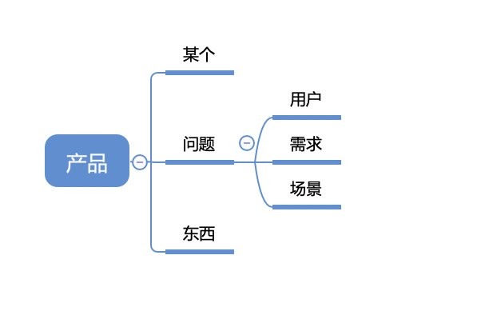

<!DOCTYPE html>
<html>
<head><meta name="generator" content="Hexo 3.8.0">
  <meta charset="utf-8">
  
  <title>产品的关键词 | guowj</title>
  <meta name="viewport" content="width=device-width, initial-scale=1, maximum-scale=1">
  
  <meta name="keywords" content="用户需求场景">
  
  
  
  
  <meta name="description" content="&amp;nbsp;&amp;nbsp;&amp;nbsp;&amp;nbsp;&amp;nbsp;&amp;nbsp;产品究竟是什么？">
<meta name="keywords" content="用户,需求,场景">
<meta property="og:type" content="article">
<meta property="og:title" content="产品的关键词">
<meta property="og:url" content="https://gwjacqueline.github.io/产品的关键词/index.html">
<meta property="og:site_name" content="guowj">
<meta property="og:description" content="&amp;nbsp;&amp;nbsp;&amp;nbsp;&amp;nbsp;&amp;nbsp;&amp;nbsp;产品究竟是什么？">
<meta property="og:locale" content="zh-CN">
<meta property="og:image" content="https://gwjacqueline.github.io/images/pm/pmkeyWord.png">
<meta property="og:updated_time" content="2019-08-12T01:24:48.713Z">
<meta name="twitter:card" content="summary">
<meta name="twitter:title" content="产品的关键词">
<meta name="twitter:description" content="&amp;nbsp;&amp;nbsp;&amp;nbsp;&amp;nbsp;&amp;nbsp;&amp;nbsp;产品究竟是什么？">
<meta name="twitter:image" content="https://gwjacqueline.github.io/images/pm/pmkeyWord.png">
  
    <link rel="alternate" href="/atom.xml" title="guowj" type="application/atom+xml">
  

  

  <link rel="icon" href="/css/images/mylogo.png">
  <link rel="apple-touch-icon" href="/css/images/mylogo.png">
  
    <link href="//fonts.googleapis.com/css?family=Source+Code+Pro" rel="stylesheet" type="text/css">
  
  <link href="https://fonts.googleapis.com/css?family=Open+Sans|Montserrat:700" rel="stylesheet" type="text/css">
  <link href="https://fonts.googleapis.com/css?family=Roboto:400,300,300italic,400italic" rel="stylesheet" type="text/css">
  <link href="//netdna.bootstrapcdn.com/font-awesome/4.0.3/css/font-awesome.css" rel="stylesheet">
  <style type="text/css">
    @font-face{font-family:futura-pt; src:url("../css/fonts/FuturaPTBold.otf") format("woff");font-weight:500;font-style:normal;}
    @font-face{font-family:futura-pt-light; src:url("../css/fonts/FuturaPTBook.otf") format("woff");font-weight:lighter;font-style:normal;}
    @font-face{font-family:futura-pt-italic; src:url("../css/fonts/FuturaPTBookOblique.otf") format("woff");font-weight:400;font-style:italic;}
}

  </style>
  <link rel="stylesheet" href="/css/style.css">

  <script src="/js/jquery-3.1.1.min.js"></script>
  <script src="/js/bootstrap.js"></script>

  <!-- Bootstrap core CSS -->
  <link rel="stylesheet" href="/css/bootstrap.css">

  
    <link rel="stylesheet" href="/css/dialog.css">
  

  

  
    <link rel="stylesheet" href="/css/header-post.css">
  

  
  
  
    <link rel="stylesheet" href="/css/vdonate.css">
  

</head>
</html>


  <body data-spy="scroll" data-target="#toc" data-offset="50">


  
  <div id="container">
    <div id="wrap">
      
        <header>

    <div id="allheader" class="navbar navbar-default navbar-static-top" role="navigation">
        <div class="navbar-inner">
          
          <div class="container"> 
            <button type="button" class="navbar-toggle" data-toggle="collapse" data-target=".navbar-collapse">
              <span class="sr-only">Toggle navigation</span>
              <span class="icon-bar"></span>
              <span class="icon-bar"></span>
              <span class="icon-bar"></span>
            </button>

            
              <a class="brand" style="
                 margin-top: 0px;" href="#" data-toggle="modal" data-target="#myModal">
                  
              </a>
            
            
            <div class="navbar-collapse collapse">
              <ul class="hnav navbar-nav">
                
                  <li> <a class="main-nav-link" href="/">首页</a> </li>
                
                  <li> <a class="main-nav-link" href="/archives">归档</a> </li>
                
                  <li> <a class="main-nav-link" href="/categories">分类</a> </li>
                
                  <li> <a class="main-nav-link" href="/tags">标签</a> </li>
                
                  <li><div id="search-form-wrap">

    <form class="search-form">
        <input type="text" class="ins-search-input search-form-input" placeholder>
        <button type="submit" class="search-form-submit"></button>
    </form>
    <div class="ins-search">
    <div class="ins-search-mask"></div>
    <div class="ins-search-container">
        <div class="ins-input-wrapper">
            <input type="text" class="ins-search-input" placeholder="请输入关键词...">
            <span class="ins-close ins-selectable"><i class="fa fa-times-circle"></i></span>
        </div>
        <div class="ins-section-wrapper">
            <div class="ins-section-container"></div>
        </div>
    </div>
</div>
<script>
(function (window) {
    var INSIGHT_CONFIG = {
        TRANSLATION: {
            POSTS: '文章',
            PAGES: '页面',
            CATEGORIES: '分类',
            TAGS: '标签',
            UNTITLED: '(无标题)',
        },
        ROOT_URL: '/',
        CONTENT_URL: '/content.json',
    };
    window.INSIGHT_CONFIG = INSIGHT_CONFIG;
})(window);
</script>
<script src="/js/insight.js"></script>

</div></li>
            </ul></div>
          </div>
                
      </div>
    </div>

</header>


      
            
      <div id="content" class="outer">
        
          <section id="main" style="float:none;"><article id="post-产品的关键词" style="width: 75%; float:left;" class="article article-type-post" itemscope itemprop="blogPost">
  <div id="articleInner" class="article-inner">
    
    
      <header class="article-header">
        
  
    <h1 class="thumb" itemprop="name">
      产品的关键词
    </h1>
  

      </header>
    
    <div class="article-meta">
      
	<a href="/产品的关键词/" class="article-date">
	  <time datetime="2019-08-10T02:56:36.000Z" itemprop="datePublished">2019-08-10</time>
	</a>

      
    <a class="article-category-link" href="/categories/产品/">产品</a>

      
	<a class="article-views">
	<span id="busuanzi_container_page_pv">
		阅读量<span id="busuanzi_value_page_pv"></span>
	</span>
	</a>

      

    </div>
    <div class="article-entry" itemprop="articleBody">
      
        <blockquote>
<p>&nbsp;&nbsp;&nbsp;&nbsp;&nbsp;&nbsp;产品究竟是什么？</p>
</blockquote>
<a id="more"></a>
<h2 id="产品"><a href="#产品" class="headerlink" title="产品"></a>产品</h2><p>&nbsp;&nbsp;&nbsp;&nbsp;&nbsp;&nbsp;<strong>产品是解决某个问题的东西。</strong>其中提炼出的三个关键字就是“某个”、“问题”、“东西”。而“问题”又包含了三个关键词：“用户”、“需求”、“场景”。</p>
<div align="center"><br>  <br></div>

<h3 id="某个：明确定位"><a href="#某个：明确定位" class="headerlink" title="某个：明确定位"></a>某个：明确定位</h3><p>&nbsp;&nbsp;&nbsp;&nbsp;&nbsp;&nbsp;任何一个产品都没法解决所有的问题。特别在产品的早期，要用针对性地满足某些用户的某些需求。<strong>就是要有明确的定位</strong>。某个说的就是“<strong>定位</strong>”。很多时候，想清楚自己要做什么很难，但是，很明白自己肯定不要做什么。我们可以通过这种逆向思维逐步找到自己的定位。比如一个动漫社区的定位是面对所有人的，导致这个社区的🉐既有给几岁小孩看的喜洋洋和灰太狼又有给成年人看的海贼王。大部分用户来这里，都觉得自己来错地方了。这个就是非常典型的定位不清。</p>
<h3 id="问题：用户、需求、场景"><a href="#问题：用户、需求、场景" class="headerlink" title="问题：用户、需求、场景"></a>问题：用户、需求、场景</h3><p>&nbsp;&nbsp;&nbsp;&nbsp;&nbsp;&nbsp;“问题”包含了三个关键词：<strong>用户、需求、场景</strong>。这三个词是任何一个产品人都需要掌握的最核心的概念。</p>
<ul>
<li>用户：这个问题是谁的问题</li>
<li>需求：问题的核心是什么</li>
<li>场景：用户在什么情况，以及何时何地碰到这个问题</li>
</ul>
<h4 id="用户：谁的问题"><a href="#用户：谁的问题" class="headerlink" title="用户：谁的问题"></a>用户：谁的问题</h4><p>&nbsp;&nbsp;&nbsp;&nbsp;&nbsp;&nbsp;用户即产品干系人，指的是与产品有关的所有人，也包括公司内部人员。任何产品的用户都是多种多样的，但有主次之分。我们要注意<strong>不要为了次要用户的需求干扰核心用户</strong>。如有余力，可以在满足好核心用户之余去照顾次要用户。这里说的用户，更多指的是<strong>角色，即社会意义上的人。</strong></p>
<p>&nbsp;&nbsp;&nbsp;&nbsp;&nbsp;&nbsp;以常见的一对用户角色：客户和终端用户为例。客户是指<strong>付钱买产品的人</strong>；终端用户是指<strong>最终使用产品的人</strong>。比如家长给小孩买玩具，那么客户指的就是家长，终端用户指的就是小孩。强调材质安全、环保、无毒是指向客户的。外形设计可爱、颜色鲜艳则是指向终端用户的。</p>
<p>&nbsp;&nbsp;&nbsp;&nbsp;&nbsp;&nbsp;互联网的“脱媒、去中介”特性，使得对终端用户的重视程度越来越高。而很多 2C 的传统企业，只抓住客户而忽视终端用户，就很可能在新形势下受挫。</p>
<h4 id="需求：问题的核心"><a href="#需求：问题的核心" class="headerlink" title="需求：问题的核心"></a>需求：问题的核心</h4><p>&nbsp;&nbsp;&nbsp;&nbsp;&nbsp;&nbsp;需求即问题的核心。它是分深浅的。</p>
<p>&nbsp;&nbsp;&nbsp;&nbsp;&nbsp;&nbsp;最浅的一层，是需求的表象，包含各种要求和欲望。就是常常听用户说的：“我要 A”、“我想 B”这样一些反应用户需求的观点和行为。</p>
<p>&nbsp;&nbsp;&nbsp;&nbsp;&nbsp;&nbsp;第二层是观点和行为背后的目标、动机，对应用户要达成的一个愿望或完成的一件事情。</p>
<p>&nbsp;&nbsp;&nbsp;&nbsp;&nbsp;&nbsp;最深的一层就是<strong>人性</strong>。每个需求，挖到最后，都可以归结到人性层面。比较常见的是“马斯洛需求层次理论“。比如公益众筹类的产品，把握住了人们的”大爱“。微信中”人生十大忌，千万不能犯“，则利用了老人们恐惧，从众的心理。人性虽然指向比较虚的价值观层面，但<strong>影响深远</strong>。</p>
<p>&nbsp;&nbsp;&nbsp;&nbsp;&nbsp;&nbsp;满足需求有三种办法：<strong>提高现实、降低期望、转移需求</strong>。</p>
<p>举例：大家觉得物质生活水平太低，怎么办？</p>
<ul>
<li><p>提高现实：自己努力、公司加薪、国家减税。<br><strong>大多数情况在使用这种办法，虽然很累但是值得，最容易与用户建立长期的良性关系</strong></p>
</li>
<li><p>降低期望：忆苦思甜，比下有余<br><strong>可以暂时解决问题，但对产品的美誉度有负面影响，要慎用</strong></p>
</li>
<li><p>转移需求：寻找新关注点，转移注意力。比如：和平年代用国对国对抗的体育赛事来激发集体主义、爱国主义。<br><strong>可以暂时解决问题，但其实在把用户往外推，用得太多用户就和我们没关系了</strong></p>
</li>
</ul>
<h4 id="场景：何时何地，各种条件"><a href="#场景：何时何地，各种条件" class="headerlink" title="场景：何时何地，各种条件"></a>场景：何时何地，各种条件</h4><p>&nbsp;&nbsp;&nbsp;&nbsp;&nbsp;&nbsp;最近几年，越来越多提到”场景“，这背后有个很大的因素，就是互联网从 PC 时代过渡到了移动时代。<strong>用户的群体更广，产品触达用户的渠道变得复杂。</strong>不同场景会导致我们采取完全不同的解决方案。比如用户使一名 IT 白领人群，需求是能每天都了解时事新闻。在场景一：上班坐地铁，对应的产品是手机 APP，比如：今日头条。而在场景二中：上班坐在电脑前，偷闲会看新闻网站，或者有突发新闻时，看到电脑右下角浮出的新闻窗口。</p>
<h5 id="移动领域特有的领域知识"><a href="#移动领域特有的领域知识" class="headerlink" title="移动领域特有的领域知识"></a>移动领域特有的领域知识</h5><ul>
<li>要掌握移动领域的基础知识：比如 ios 和 android 的手势操作，技术基础（哪些是系统自带，哪些可以调用第三方服务简单实现）</li>
<li>要熟悉各种可利用的硬件</li>
<li>要理解互动方式的变化</li>
<li>要明白产业链的结构</li>
<li>要懂得用简单逻辑完成任务</li>
<li>要采用更灵活的实施过程:开发一个、内测一个、发布一个</li>
</ul>
<p>&nbsp;&nbsp;&nbsp;&nbsp;&nbsp;&nbsp;<strong>用户、需求、场景三个词共同描述了”问题“：什么人在什么情况下，想搞定什么事，缺一不可</strong></p>
<h3 id="东西：解决方案"><a href="#东西：解决方案" class="headerlink" title="东西：解决方案"></a>东西：解决方案</h3><p>&nbsp;&nbsp;&nbsp;&nbsp;&nbsp;&nbsp;最后一个词东西：就是解决方案。东西可以是一个有形的实物，也可以是一个无形的服务。一台电脑，一个 APP 都可以算实物。服务的话，通常有线下部分，包含更多与人的交互。比如 OTO（Online to Office）。我们不应该将产品简单地理解成手机里的某个应用。更要去关注产品背后的隐性因素————需要哪些合作伙伴、供应链如何优化、线下部分如何手机等等。</p>

      
    </div>
    <footer class="article-footer">
      
        <div id="donation_div"></div>

<script src="/js/vdonate.js"></script>
<script>
var a = new Donate({
  title: '如果觉得我的文章对您有用，请随意打赏。您的支持将鼓励我继续创作!', // 可选参数，打赏标题
  btnText: '打赏支持', // 可选参数，打赏按钮文字
  el: document.getElementById('donation_div'),
  wechatImage: '../images/wx.jpeg',
  alipayImage: '../images/zfb.jpg'
});
</script>
      
      
      <div>
        <ul class="post-copyright">
          <li class="post-copyright-author">
          <strong>本文作者:  </strong>guowj
          </li>
          <li class="post-copyright-link">
          <strong>本文链接:  </strong>
          <a href="/产品的关键词/" target="_blank" title="产品的关键词">https://gwjacqueline.github.io/产品的关键词/</a>
          </li>
          <li class="post-copyright-license">
            <strong>版权声明:   </strong>
            本博客所有文章除特别声明外，均采用 <a rel="license" href="https://creativecommons.org/licenses/by-nc-nd/4.0/" target="_blank" title="Attribution-NonCommercial-NoDerivatives 4.0 International (CC BY-NC-ND 4.0)">CC BY-NC-ND 4.0</a>
            许可协议。转载请注明出处
          </li>
         
        </ul>
<div>
</div></div>
      
      
        
	<div id="comment">
		<!-- 来必力City版安装代码 -->
		<div id="lv-container" data-id="city" data-uid="MTAyMC80MzU1OS8yMDA5OA==" ">
		<script type="text/javascript">
		   (function(d, s) {
		       var j, e = d.getElementsByTagName(s)[0];

		       if (typeof LivereTower === 'function') { return; }

		       j = d.createElement(s);
		       j.src = 'https://cdn-city.livere.com/js/embed.dist.js';
		       j.async = true;

		       e.parentNode.insertBefore(j, e);
		   })(document, 'script');
		</script>
		<noscript>为正常使用来必力评论功能请激活JavaScript</noscript>
		</div>
		<!-- City版安装代码已完成 -->
	</div>


      
      
        
  <ul class="article-tag-list"><li class="article-tag-list-item"><a class="article-tag-list-link" href="/tags/场景/">场景</a></li><li class="article-tag-list-item"><a class="article-tag-list-link" href="/tags/用户/">用户</a></li><li class="article-tag-list-item"><a class="article-tag-list-link" href="/tags/需求/">需求</a></li></ul>

      

    </footer>
  </div>
  
    
<nav id="article-nav">
  
    <a href="/聊聊用户分类的方法/" id="article-nav-newer" class="article-nav-link-wrap">
      <strong class="article-nav-caption">上一篇</strong>
      <div class="article-nav-title">
        
          聊聊用户分类的方法
        
      </div>
    </a>
  
  
    <a href="/中国为何长出全球最牛的移动支付体系/" id="article-nav-older" class="article-nav-link-wrap">
      <strong class="article-nav-caption">下一篇</strong>
      <div class="article-nav-title">中国为何长出全球最牛的移动支付体系</div>
    </a>
  
</nav>

  
</article>

<!-- Table of Contents -->

  <aside id="toc-sidebar">
    <div id="toc" class="toc-article">
    <strong class="toc-title">文章目录</strong>
    
        <ol class="nav"><li class="nav-item nav-level-2"><a class="nav-link" href="#产品"><span class="nav-number">1.</span> <span class="nav-text">产品</span></a><ol class="nav-child"><li class="nav-item nav-level-3"><a class="nav-link" href="#某个：明确定位"><span class="nav-number">1.1.</span> <span class="nav-text">某个：明确定位</span></a></li><li class="nav-item nav-level-3"><a class="nav-link" href="#问题：用户、需求、场景"><span class="nav-number">1.2.</span> <span class="nav-text">问题：用户、需求、场景</span></a><ol class="nav-child"><li class="nav-item nav-level-4"><a class="nav-link" href="#用户：谁的问题"><span class="nav-number">1.2.1.</span> <span class="nav-text">用户：谁的问题</span></a></li><li class="nav-item nav-level-4"><a class="nav-link" href="#需求：问题的核心"><span class="nav-number">1.2.2.</span> <span class="nav-text">需求：问题的核心</span></a></li><li class="nav-item nav-level-4"><a class="nav-link" href="#场景：何时何地，各种条件"><span class="nav-number">1.2.3.</span> <span class="nav-text">场景：何时何地，各种条件</span></a><ol class="nav-child"><li class="nav-item nav-level-5"><a class="nav-link" href="#移动领域特有的领域知识"><span class="nav-number">1.2.3.1.</span> <span class="nav-text">移动领域特有的领域知识</span></a></li></ol></li></ol></li><li class="nav-item nav-level-3"><a class="nav-link" href="#东西：解决方案"><span class="nav-number">1.3.</span> <span class="nav-text">东西：解决方案</span></a></li></ol></li></ol>
    
    </div>
  </aside>

</section>
        
      </div>
      
      <footer id="footer">
  

  <div class="container">
      	<div class="row">
	      <!--<p> Powered by <a href="http://hexo.io/" target="_blank">Hexo</a> and <a href="https://github.com/iTimeTraveler/hexo-theme-hiker" target="_blank">Hexo-theme-hiker</a> </p>-->
	      <p id="copyRightEn">Copyright &copy;2019 guowj All Rights Reserved.</p>
	      
	      
    		<p class="busuanzi_uv">
				访客数 : <span id="busuanzi_value_site_uv"></span> |  
				访问量 : <span id="busuanzi_value_site_pv"></span>
		    </p>
  		   
		</div>

		
  </div>
</footer>


<!-- min height -->

<script>
    var wrapdiv = document.getElementById("wrap");
    var contentdiv = document.getElementById("content");
    var allheader = document.getElementById("allheader");

    wrapdiv.style.minHeight = document.body.offsetHeight + "px";
    if (allheader != null) {
      contentdiv.style.minHeight = document.body.offsetHeight - allheader.offsetHeight - document.getElementById("footer").offsetHeight + "px";
    } else {
      contentdiv.style.minHeight = document.body.offsetHeight - document.getElementById("footer").offsetHeight + "px";
    }
</script>
    </div>
    <!-- <nav id="mobile-nav">
  
    <a href="/" class="mobile-nav-link">Home</a>
  
    <a href="/archives" class="mobile-nav-link">Archives</a>
  
    <a href="/categories" class="mobile-nav-link">Categories</a>
  
    <a href="/tags" class="mobile-nav-link">Tags</a>
  
</nav> -->
    

<!-- mathjax config similar to math.stackexchange -->

<script type="text/x-mathjax-config">
  MathJax.Hub.Config({
    tex2jax: {
      inlineMath: [ ['$','$'], ["\\(","\\)"] ],
      processEscapes: true
    }
  });
</script>

<script type="text/x-mathjax-config">
    MathJax.Hub.Config({
      tex2jax: {
        skipTags: ['script', 'noscript', 'style', 'textarea', 'pre', 'code']
      }
    });
</script>

<script type="text/x-mathjax-config">
    MathJax.Hub.Queue(function() {
        var all = MathJax.Hub.getAllJax(), i;
        for(i=0; i < all.length; i += 1) {
            all[i].SourceElement().parentNode.className += ' has-jax';
        }
    });
</script>

<script type="text/javascript" src="https://cdnjs.cloudflare.com/ajax/libs/mathjax/2.7.1/MathJax.js?config=TeX-AMS-MML_HTMLorMML">
</script>


  <link rel="stylesheet" href="/fancybox/jquery.fancybox.css">
  <script src="/fancybox/jquery.fancybox.pack.js"></script>


<script src="/js/scripts.js"></script>


  <script src="/js/dialog.js"></script>


	<div style="display: none;">
    <script src="https://s95.cnzz.com/z_stat.php?id=1260716016&web_id=1260716016" language="JavaScript"></script>
  </div>


	<script async src="//busuanzi.ibruce.info/busuanzi/2.3/busuanzi.pure.mini.js">
	</script>


  </div>

  <div class="modal fade" id="myModal" tabindex="-1" role="dialog" aria-labelledby="myModalLabel" aria-hidden="true" style="display: none;">
  <div class="modal-dialog">
    <div class="modal-content">
      <div class="modal-header">
        <h2 class="modal-title" id="myModalLabel">设置</h2>
      </div>
      <hr style="margin-top:0px; margin-bottom:0px; width:80%; border-top: 3px solid #000;">
      <hr style="margin-top:2px; margin-bottom:0px; width:80%; border-top: 1px solid #000;">


      <div class="modal-body">
          <div style="margin:6px;">
            <a data-toggle="collapse" data-parent="#accordion" href="#collapseOne" onclick="javascript:setFontSize();" aria-expanded="true" aria-controls="collapseOne">
              正文字号大小
            </a>
          </div>
          <div id="collapseOne" class="panel-collapse collapse" role="tabpanel" aria-labelledby="headingOne">
          <div class="panel-body">
            您已调整页面字体大小
          </div>
        </div>
      


          <div style="margin:6px;">
            <a data-toggle="collapse" data-parent="#accordion" href="#collapseTwo" onclick="javascript:setBackground();" aria-expanded="true" aria-controls="collapseTwo">
              夜间护眼模式
            </a>
        </div>
          <div id="collapseTwo" class="panel-collapse collapse" role="tabpanel" aria-labelledby="headingTwo">
          <div class="panel-body">
            夜间模式已经开启，再次单击按钮即可关闭 
          </div>
        </div>

        <div>
            <a data-toggle="collapse" data-parent="#accordion" href="#collapseThree" aria-expanded="true" aria-controls="collapseThree">&nbsp;&nbsp;&nbsp;&nbsp;&nbsp;&nbsp;关 于&nbsp;&nbsp;&nbsp;&nbsp;&nbsp;&nbsp;</a>
        </div>
         <div id="collapseThree" class="panel-collapse collapse" role="tabpanel" aria-labelledby="headingThree">
          <div class="panel-body">
            guowj
          </div>
          <div class="panel-body">
            Copyright © 2019 guowj All Rights Reserved.
          </div>
        </div>
      </div>


      <hr style="margin-top:0px; margin-bottom:0px; width:80%; border-top: 1px solid #000;">
      <hr style="margin-top:2px; margin-bottom:0px; width:80%; border-top: 3px solid #000;">
      <div class="modal-footer">
        <button type="button" class="close" data-dismiss="modal" aria-label="Close"><span aria-hidden="true">×</span></button>
      </div>
    </div>
  </div>
</div>
  
  <a id="rocket" href="#top" class=""></a>
  <script type="text/javascript" src="/js/totop.js?v=1.0.0" async=""></script>
  
    <a id="menu-switch"><i class="fa fa-bars fa-lg"></i></a>
  
</body>
</html>